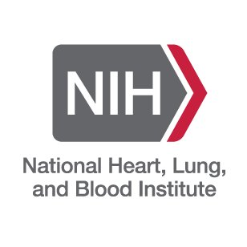

Computational Mathematics, Science & Engineering · Michigan State University
Hou Lab
AI and machine learning for biomolecular structure, omics, and health
Research
We build data-driven computational methods — machine learning, deep learning, and computational optimization — for fundamental problems in the biological sciences.
Our work spans the prediction of protein and RNA three-dimensional structures, the modeling of molecular interactions such as protein–protein complexes and protein–RNA contacts, and the estimation of the quality of predicted structures. Beyond structural bioinformatics we collaborate broadly on healthcare analytics, privacy-preserving machine learning, and omics data analysis. A complete list of publications is available on the Publications page, in NCBI My Bibliography, and on Google Scholar.
Protein & RNA Structure Prediction and Quality Assessment
Data-assisted protein/RNA structure prediction
Data-restrained structural modeling based on experimental information has attracted renewed attention, and robust solutions are still under development. Experimental restraints from cross-linking mass spectrometry, small-angle X-ray scattering (SAXS), and single-particle cryo-electron microscopy (cryo-EM) are a promising direction for improving structural models.
We develop computational methods (deep learning, machine learning, and optimization techniques) that determine how to best leverage SAXS and cryo-EM information in protein and RNA structure modeling. Earlier work by Dr. Hou in the CASP experiments — deep-learning contact/distance prediction (DNCON2, DeepDist), fold recognition (DeepSF), and contact-driven tertiary modeling — forms the foundation of this direction.
Selected publications
- Chen J, Zia A, Hou J, Wang F, Cao R, Si D. Protein structure refinement via DeepTracer and AlphaFold2. Briefings in Bioinformatics, 2023. Link
- Nakamura A, Meng H, Zhao M, Wang F, Hou J, Cao R, Si D. Fast and automated protein-DNA/RNA macromolecular complex modeling from cryo-EM maps. Briefings in Bioinformatics 24(2):bbac632, 2023. Link
- Si D, Nakamura A, Tang R, Guan H, Hou J, Firozi A, et al. Artificial intelligence advances for de novo molecular structure modeling in cryo-electron microscopy. WIREs Computational Molecular Science 12(2):e1542, 2022. Link
- Hou J, Adhikari B, Tanner JJ, Cheng J. SAXSDom: Modeling multidomain protein structures using small-angle X-ray scattering data. Proteins 88(6):775–787, 2020. Link
- Hou J, Wu T, Cao R, Cheng J. Protein tertiary structure modeling driven by deep learning and contact distance prediction in CASP13. Proteins 87(12):1165–1178, 2019. Link
RNA motif structure and AI-ready data
Supported by two NIH/NIGMS R15 awards, we are building a fully automated framework for parsing, annotating, and generating RNA motif structural data that is ready for AI and machine-learning applications. We combine this data engine with graph neural networks for RNA secondary-structure prediction and with structural-pattern mining of solved RNA 3D structures to derive updated thermodynamic parameters for common and modified RNA motifs (with Dr. Brent Znosko, SLU Chemistry).
Most recently, undergraduate researchers in the lab have been developing AutoRNA, an AI agent built on open-source large language models that automates RNA motif analysis end to end (poster, 2025 SSE Undergraduate Student Showcase).
Protein structure quality assessment
Quality assessment (QA) evaluates the accuracy of a predicted protein model without knowing its true structure, and is an essential component of every structure-prediction pipeline. We develop deep-learning QA methods — including deep graph learning that integrates structural constraints from multiple sequence alignments and residue–residue contact/distance predictions — for both single-chain proteins and protein complexes. Dr. Hou's QA approach was ranked first in model ranking in the 13th CASP experiment (2018).
Selected publications
- Zhang L, Wang S, Hou J, Si D, Zhu J, Cao R. ComplexQA: A deep graph learning approach for protein complex structure assessment. Briefings in Bioinformatics 24(6):bbad287, 2023. Link
- Rahbar M, Chauhan RK, Shah PN, Cao R, Si D, Hou J. Deep graph learning to estimate protein model quality using structural constraints from multiple sequence alignments. ACM-BCB, 2022. Link
- Cheng J, Choe MH, Elofsson A, Han KS, Hou J, et al. Estimation of model accuracy in CASP13. Proteins 87(12):1361–1377, 2019. Link
- Cao R, Bhattacharya D, Hou J, Cheng J. DeepQA: improving the estimation of single protein model quality with deep belief networks. BMC Bioinformatics 17:495, 2016.
Omics & Health Data Analytics
Machine learning for warfarin dosing
In collaboration with Dr. Brian Gage (Washington University School of Medicine), and supported by an NIH/NHLBI R01, we develop penalized-regression and machine-learning algorithms to guide anticoagulant (warfarin) dosing and to predict the International Normalized Ratio (INR) over long-term therapy. Our role centers on quantifying the dose–response relationship, validating the algorithms, and deploying them through the Epic electronic health record and the non-profit web application WarfarinDosing.org.
Gene regulation and genomic imbalance
With Dr. James Birchler and Dr. Jianlin Cheng (University of Missouri), we study how genomic imbalance (aneuploidy, dosage changes) modulates gene expression in maize and Arabidopsis, and we build tools such as GNET2 for constructing gene regulatory networks from transcriptomic data. We also collaborate on single-cell RNA-seq imputation, proteomics data analysis, and biomarker discovery.
Selected publications
- Shi X, Yang H, Chen C, Hou J, Ji T, Cheng J, Birchler JA. Dosage-sensitive miRNAs trigger modulation of gene expression during genomic imbalance in maize. Nature Communications 13:3014, 2022.
- Blavet N, Yang H, Su H, et al., Hou J, Shi X. Sequence of the supernumerary B chromosome of maize provides insight into its drive mechanism and evolution. PNAS 118(23):e2104254118, 2021.
- Hou J, Shi X, Chen C, et al., Cheng J, Birchler JA. Global impacts of chromosomal imbalance on gene expression in Arabidopsis and other taxa. PNAS 115(48):E11321–E11330, 2018.
- Chen C, Hou J, Shi X, Yang H, Birchler JA, Cheng J. GNET2: An R package for constructing gene regulatory networks from transcriptomic data. Bioinformatics, 2020.
AI Agents, Research Security, Privacy & AI in Education
AI agents for science. We are exploring how open-source large language models can drive autonomous agents that plan and execute structural-bioinformatics analyses, starting with automated RNA motif analysis (AutoRNA).
Research security and scientific integrity in AI-driven biology. Modern biological AI pipelines depend on externally sourced datasets, reference databases, and reusable pretrained models of often unverified origin. Supported by an NSF EAGER award (2026), we are mapping where these dependencies enter biological workflows, scoring the risk of each dependency pathway, and running controlled adversarial experiments (starting with soil metagenomics) to measure how integrity failures propagate to scientific conclusions and whether standard validation practices detect them.
Urban AI. With Dr. Si Chen (MSU School of Planning, Design and Construction), and supported by an MSU AI Ready Spartans Innovation Grant, we are building Urban AI, a non-credit learning experience that lets students from any major use AI-driven decision-support tools on real urban challenges.
Privacy-preserving machine learning. With Dr. Reza Tourani (SLU), we analyzed inference attacks on split learning and proposed the Split-Fuse defensive measure (IEEE CNS 2023).
AI in education (AI4Ed). Dr. Hou integrates ProcessFeedback and LLM-based tools into computational courses to strengthen engagement and academic integrity. This work was presented as a tutorial at ACM SIGCSE 2025 (paper, workshop materials) and at the FOCUS Teaching & Technology Conference. Acknowledgement: Dr. Badri Adhikari (University of Missouri–St. Louis), founder of ProcessFeedback.
Selected publications
- Adhikari B, Hou J. Teaching Coding in the Age of AI: A Hands-on Tutorial on Process Feedback. Proc. 56th ACM Technical Symposium on Computer Science Education (SIGCSE TS) V.2, 2025. Link
- Dougherty S, Kumar A, Hou J, Tourani R, Tabakhi AM. A stealthy inference attack on split learning with a Split-Fuse defensive measure. IEEE Conference on Communications and Network Security (CNS), 2023.
Grants

Collaborative Research: EAGER: Unveiling Security Risks to Scientific Integrity in AI-Driven Biological Discovery
Major goals: characterize how externally sourced digital resources — datasets, annotations, metadata, software, and pretrained models — enter biological AI workflows; identify gaps in provenance verification; and quantify how resource-integrity failures alter downstream scientific conclusions.
Approach: practitioner surveys and interviews build a provenance-to-interpretation graph and a pathway-level risk-scoring framework; adversarial integrity experiments on a soil-metagenomic workflow (with cross-domain validation in plant phenotyping, crop genomics, and environmental monitoring) measure how far controlled perturbations propagate and whether current validation practices catch them. The project also trains graduate and undergraduate students at the intersection of cybersecurity and biology.
Urban AI: AI-Driven Decision Support for Real-World Urban Challenges
Major goals: develop a scalable 20-hour online learning experience that introduces MSU students from all majors to AI-driven decision-support systems for urban planning — computer vision for satellite and street-view imagery, text mining of geolocated public comments, and LLM agents for scenario analysis and stakeholder engagement — with responsible AI use, human oversight, and equity at the center. Target: 500+ students per year in 10–12 cohorts.
Scope of work: Dr. Hou designs the AI/ML technical components, selects and configures accessible no-code decision-support tools, and ensures the AI workflows are usable by students without programming backgrounds.
Improving Artificial Intelligence Readiness of RNA Motif Data for Structure Analysis and Modeling
Major goals: enhance computational RNA structural analysis by integrating AI and developing a comprehensive RNA data generation framework tailored for AI applications.
Understanding the Thermodynamics and Structure of RNA Secondary Structure Motifs
Major goals: improve RNA secondary and 3D structure prediction by deriving updated thermodynamic parameters for common and modified RNA motifs and enhancing computational tools for structural analysis.
Scope of work: major role in developing bioinformatics algorithms to identify structural patterns in previously solved RNA 3D structures to improve 3D structure prediction.

Pharmacogenetic Refinement of the Warfarin Dose Using Machine Learning
Major goals: improve the safety and effectiveness of anticoagulant therapy using penalized regression and machine learning to guide warfarin dosing, integrated into the Epic electronic health record and made publicly available at WarfarinDosing.org.
Scope of work: major role in developing an advanced machine-learning framework to quantify the long-term warfarin dose–response relationship; algorithm validation and deployment via Epic.
CC* Compute-Campus: Modernizing Campus Cyberinfrastructure for AI-Enhanced Research and Education (ModernCARE)
Major goals: enhance SLU's campus computing infrastructure with a new university-wide GPU-based cluster supporting AI-driven research and education.
Scope of work: HPC training workshops and seminars, leading the bioinformatics/AI sub-session, validating the system on AI-driven molecular structure prediction, and incorporating the environment into new machine-learning and bioinformatics courses.
SLU Scholarly Undergraduate Research Grants and Experiences (SURGE)
Active “AI agent for automated RNA motif analysis using open-source large language models (LLMs),” 08/2025 – 06/2026 (position details)
Completed “Automated RNA Motif Structure Parsing Framework for AI/ML applications,” 08/2024 – 12/2024
Completed “Computational algorithms for binding affinity between antibodies and antigens,” 05/2023 – 09/2023
SLU Foundational Interdisciplinary Research Experience (FIRE)
“Advancing RNA Motif Structural Analysis with a Fully Automated AI Agent.” See the team's AutoRNA poster from the 2025 SSE Undergraduate Student Showcase.
Earlier internal awards
SLU President's Research Fund (co-PI): privacy analysis of distributed learning with a defensive measure, 05/2022 – 04/2023.
WUSTL ICTS/CTRFP (co-PI): machine-learning algorithms for pharmacogenetic refinement of warfarin dose, 03/2022 – 02/2023.
SLU President's Research Fund (PI): deep-learning algorithms for protein structure prediction, 05/2021 – 11/2022.
Honors & Awards
- 2024 — Faculty and Staff Excellence in Teaching Award, School of Science & Engineering, Saint Louis University
- 2019 — Outstanding PhD Student Award, College of Engineering, University of Missouri
- 2018 — Quality-assessment method ranked No. 1 in ranking protein structural models, 13th Critical Assessment of protein Structure Prediction (CASP13)